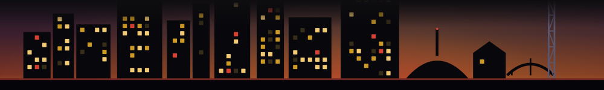

1
Pop-Up Bar at the Terrace
Weekend-only pop-up bar on the Riverfront Park terrace. Three sessions across Friday through Sunday; different hours each day.
See the listing →IT IS BACK
back through Oct 25 · last run ended Oct 10

The Nashville windows that had closed and are back on this week's board - a pop-up, dinner or show you thought you had missed, open again. The good news, for once. Verified against our board history; we never invent a comeback.
Every week Fleeting records the whole board of time-limited Nashville windows. A window lands here only when the board history shows all four: it is on this week's board, it was gone the week before, an earlier listing carried a real close date that has since passed (so it genuinely closed - we never read a closure from mere absence), and its current listing is still open. We claim only what the board can prove: its last run ended on the date shown, and it is back now. Dates are the listing's own; a missing end date reads ongoing, never a guess. No alerts, no notifications; one email a week.
Be first to know when a lost favorite comes back. That is the whole point of the Thursday list - the week's time-limited Nashville windows, including the ones that just returned, in your inbox while they are open again.
Get the Thursday list, free →Looking for what closed and has not come back? See the archive. What is open or closing next? the conditions board. What sold out this week? the leaderboard. Built October 23, 2026.